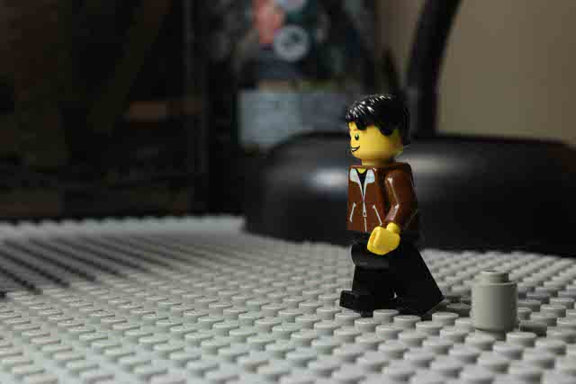

15 & 24 fps Walk Cycles
Article by Kees
All the images used are made by Repelling Spider. I have explicit rights to use them. This tutorial will explain 15 and 24 fps walk cycles, starting with 15, then 24 and lastly some tips. The 24 fps video version can be found here. I hope this will assist many people on the road of brickfilming!
15 fps
Alright, we'll start this of with the 15 fps walk cycle.
Step 1
First start with your minifigure on its starting position, with its body straight and the legs both firmly on the ground.
Step 2.
In this step the minifigure will swing one of his legs upward, in this case the right one. The arm that will be swung up is always the opposite one (left in this case). The other arm is swung back slightly.
Step 3.
In this step the minifigure is balanced between two studs, leaning to the back. The arms have been swung back a bit further.
Step 4. [optional]
This step is almost identical to step 3. The only difference is that the figure is now leaning forward and not backwards. This step can be skipped although it's recommended to not do so.
Step 5.
In this step the minifigure's leg is pressed on to the stud and its hands have started coming back to the middle,
Step 6.
This step is exactly the same as step 1.
Now you've animated 1 step. Repeat this process as many times as you need to get to the destination, but alternate both hands and feet each step.
24 fps
Step 1.
The minifigure's body is straight, both its arms and legs at its side.
Step 2.
The minifigure swings one leg up, and the opposite arm as well. The other arm is swung backwards.
Step 3.
The minifigure's leg is swung up some more and the arms also swing up/down a bit.
Step 4.
The minifigure is now balanced between 2 studs, leaning backwards. The arms have also shifted slightly up/down.
Step 5.
The minifigure is now leaning forward, and its arms have been swung up/down even more.
Step 6.
The minifigure is now standing on one leg. Its arms are slowly shifted back to its starting position.
Step 7.
The only difference in step 7 is that the arms have shifted back even more.
Step 8.
This step is identical to step 1.
Now just continue this process until you reach your destination. Be sure to alternate the arms and legs with each step.
Tips
-
Try to always keep the minifigure's body straight, or else the result will look really unnatural.
-
Experiment a bit, and maybe change the cycles to your liking.
Have fun!
Well, that concludes the tutorial. I hope you all learned something, and feedback is appreciated, either via my or Spider's Twitter.